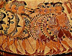

| |

краткая энциклопедия
Проект «Личность в истории» посвящен людям — современникам грандиозных исторических событий, носителям редких качеств или людям, взгляды которых опередили их время. |
|
| |
|
| |
Инки |
|
| |
- Альперович М. С., Слезкин Л. Ю. История Латинской Америки (с древнейших времен до начала XX в.).
М., «Высшая школа», 1991.
- Башилов В. А. Древние цивилизации Перу и Боливии.
М., 1972.
- Боден Л. Инки. Быт. Культура. Религия.
М., «Центрполиграф», 2004.
- Зубрицкий Ю. А. Инки-кечуа. М.. 1975.
- Инки: Владыки золота и наследники славы. Энциклопедия «Исчезнувшие цивилизации». М., «TERRA-ТЕРРА », 1997.
- Кенделл Э. Инки. Быт, религия, культура.
М., «Центрполиграф», 2005.
- Кинжалов Р. В. Искусство древней Америки. М., 1962.
- Кронозов Ю. В., Федорова И. К. Древнее перуанское письмо: проблемы и гипотезы. // «Латинская Америка», 1970, № 5.
- Нерсесов Я. Н. Доколумбова Америка. Ацтеки, майя, инки.
М., «Астрель», 2009.
- Стингл. М. Государство инков. Слава и смерть «сыновей солнца». М., «Прогресс», 1986.
- Хаген В. фон. Ацтеки, майя, инки. М., 2005.
- Хара Виктория, де ла. Дешифровка письменности инков и проблемы кипу. // «Латинская Америка», 1972, № 5.
|
|
| |
Ассирия |
|
| |
- Васильев Л. С. История Востока. т. 1., М., 1998.
- Вейс Г. История культуры народов мира. Ассирия. Вавилон. Персия. Первые сверхдержавы. М., «Эксмо» , 2005.
- Дьяконов И. М. К вопросу о судьбе пленных в Ассирии и Урарту. //ВДИ. 1952, № 1.
- Дьяконов И. М. Развитие земельных отношений в Ассирии. Л., 1949
- Зайцев А., Лаптева В., Порьяз А. Мировая культура. Шумерское царство. Вавилон и Ассирия. Древний Египет.
М., «ОЛМА-Пресс», 2000
- История Востока в шести томах. (под ред. Р. Б. Рыбакова и др.). Т. 1. Восток в древности. М., «Восточная литература» РАН, 2002
- Никольский М. В. Ассирийские клинообразные тексты. Вып. 1-2. ГМ., 1883-1884.
- Никольский М. В. О двух ассирийских фрагментах. Отрывок надписи ассирийского царя Асур-насир-абали (885-860 гг. до Р. Х.). - «Древности восточные». 1893. Т.1., Вып. 3., с. 353-359.
- Никольский М. В. Саргон, царь ассирийский. (Популярный очерк). М., 1881.
- Рагозина З. А. Древнейшая история Востока. Кн. 2. История Ассирии от возвышения ассирийской державы до падения Ниневии. СПб., «Издательство А. Ф. Маркса», 1902.
- Саггс Х. Вавилон и Ассирия. Быт, религия, культура.
М., «Центрполиграф», 2004.
- Садаев Д. Ч. История древней Ассирии. М., «Наука», 1979.
|
|
| |
Шумер |
|
| |
- Авдиев В. И. История древнего Востока. Лекции. М, 1953.
- Белицкий М. Забытый мир шумеров. М., «Наука» , 1980.
- Белов П. М. Шумеро-Аккадская культура.
Горький, Крайоно, 1935.
- Васильев Л. С. История Востока. т. 1., М., 1998.
- Дьяконов И. М. История древнего Востока: Зарождение древнейших классовых обществ и первые очаги рабовладельческой цивилизации. /в 2-х ч./. М., «Наука», 1983.
- Дьяконов И. М. Люди города Ура. М., «Наука», 1990.
- Дьяконов И. М. Общественный и государственный строй древнего Двуречья. Шумер. М., «Издательство восточной литературы», 1959.
- Дьяконов И. М. Реформы Урукагины в Лагаше.,
// ВДИ, 1951, №.1.
- Дьяконов И. М. Эпос о Гильгамеше. («О все видавшем»),
М.-Л., «Издательство Академии наук СССР», (ленинградское отделение), 1961.
- Крамер. С. М., История начинается в Шумере.
Главная редакция восточной литеретуры издательства «Наука», 1965.
- Крамер С. Шумеры. М., «Центрполиграф», 2009.
- Они мне сказали, а я повторяю. Из поэзии Шумера и Вавилонии. Слово и глина. III тыс. до н. э. — III тыс. н. э., (Составитель В. Цивин.), СПб., «Редкая книга из Санкт-Петербурга», 2001.
- Струве В. В. Вопрос о существовании в Шумере предсказания будущего посредством стрел. М., «Издательство восточной литературы», 1960.
- Струве В. В. Государство Лагаш. Борьба за расширенгие гражданского права в Лагаше XXV-XXIV вв. до н. э. М., «Издательство восточной литературы», 1961.
- Шумер: города Эдема. Энциклопедия «Исчезнувшие цивилизации». М., «ТЕРРА–TERRA», 1997.
|
|
| |
Эпоха викингов |
|
| |
- Арбман Х. Викинги. СПб., «Евразия», 2003.
- Будур Н. Повседневная жизнь викингов. IX-XI века.
М., «Молодая гвардия» , 2007.
- Викинги. Набеги с севера. Энциклопедия «Исчезнувшие цивилизации». М., «Терра», 1996.
- Гуревич А. Я. Походы викингов. М, 1966.
- Гуревич А. Я. Норвежское общество в ранее средневековье. Проблемы социального строя и культуры. М., 1977.
- Джаксон Т. Н. Исландские королевские саги о Восточной Европе (с древнейших времен по 1000 г.). М., «Наука», 1993.
- Джаксон Т. Н. Исландские королевские саги о Восточной Европе (до середины XI в.). М., 1994.
- Джаксон Т. Н. Исландские королевские саги о Восточной Европе (середина XI - середина XIII в.). М., «Ладомир», 2000.
- Джаксон Т. Н. Древнерусские топонимы в древнескандинавских источниках. СПб., «Языки славянской культуры», 2001.
- Джонс Г. Викинги. Потомки Одина и Тора.
М., «Центрполиграф,», 2010.
- Коа И. Викинги, короли морей. «АСТ», «Астрель», 1990.
- Лебедев Г. С. Эпоха викингов в Северной Европе и на Руси.
– СПб.: «Евразия», 2005.
- Симпсон Ж. Викинги. Быт, религия, культура.
М., «Центрполиграф», 2005.
- Стриннгольм А. Походы викингов. М., «АСТ», 2007.
- Хит И. Викинги. М., «АСТ»,«Астрель», 2004.
|
|
| |
Ацтеки |
|
| |
- Ацтеки: Империя крови и величия. Энциклопедия «Исчезнувшие цивилизации». М., «TERRA-ТЕРРА », 1997.
- Баглай В. Е. Ацтеки. История, экономика, социально- политический строй. «Восточная литература», 1998.
- Брэй У. Ацтеки. Быт, религия, культура. М, 2005.
- Вайян Д. История ацтеков. М., 1949.
- Мифологии древнего мира. Сборник очерков. , СПб, 2005.
- Нерсесов Я. Н. Доколумбова Америка. Ацтеки, майя, инки.
М., «Астрель», 2009.
- Пол Д., Робинсон Ч. М. Ацтеки и конкистадоры. Гибель великой цивилизации. М., «Эксмо», 2009.
- Сустель Ж. Ацтеки. Воинственные подданные Монтесумы. М., «Центрполиграф», 2003.
- Сустель Ж. Повседневная жизнь ацтеков накануне испанского завоевания. М., «Молодая гвардия », 2007.
- Таубе К. Мифы ацтеков и майя. «ФАИР-ПРЕСС», 2005.
- Хаген В. фон. Ацтеки, майя, инки. М., 2005.
- Covarrubias М. Indian art of Mexico and Central America. N. Y., 1957.
|
|
| |
Древняя Русь
(Период Киевской Руси. IX - начало XII вв.)
|
|
| |
- Арциховский A. B. Древнерусские миниатюры как исторический источник. М., МГУ, 1944.
- Будовниц И. У. Общественно-политическая мысль Древней Руси (XI — XIV вв.), М., «Издательство АН СССР», 1960.
- Греков Б. Д. Киевская Русь. М. «Госполитиздат», 1953.
- Греков Б. Д. Культура Киевской Руси.
М. - Л., «Издательство АН СССР «, 1944.
- Греков Б. Д. Крестьяне на Руси с древнейших времен до XVII века. М., «Издательство АН СССР», 1954.
- Дьяконов М.А. Очерки общественного и государственного строя Древней Руси. СПб, «Наука », 2005.
- История культуры Древней Руси. (в двух томах).
М., «Издательство АН СССР», 1948-1951.
- Мавродин В. В. Древняя Русь. Л., ОГИЗ, ГОСПОЛИТИЗДАТ, 1946.
- Мавродин В. В. Древняя и средневековая Русь.
СПб, «Наука», 2009.
- Пашуто В. Т. Внешняя политика Древней Руси.
М., «Наука», 1968.
- Рыбаков Б. А. Язычество Древней Руси. М, «Наука», 1987.
- Рыбаков Б. А. Из истории культуры древней Руси.
М., «Издательство МГУ», 1984.
- Тихомиров М. Н. Древняя Русь. «Наука», 1975.
- Тихомиров М. Н. Древнерусские города. СПб., «Наука», 2008.
- Янин В. Л. Денежно-весовые системы домонгольской Руси и очерки истории денежной системы средневекового Новгорода.
«Языки славянских культур», 2009.
|
|
| |
Этруски |
|
| |
- Блок Р. Этруски. Предсказатели будущего. М, «Центрполиграф», 2004.
- Буриан Я., Моухова Б. Загадочные этруски.
M., «Наука» , 1970.
- Залесский Н. Н., Этруски в Сев. Италии, Л., 1959.
- Колпинский Ю. Д., Бритова Н. Н. Искусство этрусков и Древнего Рима.«Искусство», 1982.
- Кондратов А. Этруски - загадка номер один. «Знание», 1977.
- Майяни З. Этруски начинают говорить. «Наука», 1966
- Макнамара Э. Этруски. Быт, религия, культура. М., «Центрполиграф», 2006
- Немировский А. И. Этруски. От мифа к истории. «Наука», 1983.
- Немировский А. И., Харсекин А. И., Этруски. Введение в этрускологию Воронеж, 1969.
- Робер Ж-Н. Этруски. «Вече», 2007.
- Соколов Г. И. Искусство этрусков. «Искусство», 1990.
- Чубова А. П. Этрусское искусство, Альбом, M., 1972.
- Эргон Ж. Повседневная жизнь этрусков. М., «Молодая гвардия», 2009.
- Этруски: Италийское жизнелюбие. Альбом, М., «ТЕРРА», 1998.
|
|
| |
Карфаген |
|
| |
- Горьков С. Ю. Рим и Карфаген: Великая морская война. «Наследие», 2003.
- Залесский Н. Н . Этруски и Карфаген. – Древний мир. М., 1962.
- Лапин. Н. А. Ганнибал. М., 1939.
- Лурье С. Я . «Афины и Карфаген. // Вестник древней истории. 1947. № 3
- Машкин Н. А. Карфагенская Держава до Пунических войн. // Вестник древней истории, 1948, № 4.
- Машкин Н. А. Последний век пунического Карфагена. // Вестник древней истории. 1949. № 2.
- Тамсон Дж. О . История древней географии. М., 1953.
- Тураев Б. А. Остатки финикийской литературы. СПб, 1903.
- Циркин Ю. Б. Карфаген и его культура. М., «Наука», 1987.
- Шифман И. Ш. Возникновение карфагенской державы. М.–Л., 1963.
- Шифман И. Ш. Финикийские мореходы. М., 1965.
- Шифман И. Ш. Карфаген. СПб, «Издательство Санкт-Петербургского университета», 2006.
|
|
|
Византия |
|
| |
- Анна Комнина, Алексиада. (вст., пер., коммент., Любарского Я. Н.)., М., 1965.
- Лев Диакон, История., М., «Наука», 1988.
- Прокопий Кесарийский, Война с персами. Война с вандалами. Тайная история., М., «Наука», 1993.
- Византийские историки о падении Константинополя в 1453 году. (под ред. Любарского Я. Н. и Соболь Т. И.)., СПб., «Алетейя», 2006.
- Гийу Андре, Византийская цивилизация., Екатеринбург, «У-Фактория», 2005.
- История Византии (под ред. акад. Сказкина С. Д.)., М., 1967, т. I–III.
- Курбатов Г. Л., История Византии (От античности к феодализму., М., «Высшая школа», 1984.
- Курбатов Г. Л., История Византии (историография)., Л., Издательство ЛГУ, 1975.
- Курбатов Г. Л., Византия в VI столетии., М., «Учпедгиз», 1959.
- Кулаковский Ю. А., История Византии., СПб., «Алетейя», 2003–2004, т. I–III.
- Левченко М. В., История Византии. Краткий очерк., М., 1940.
- Литаврин Г. Г., Как жили византийцы., М., 1974.
- Лихачева В. Д., Искусство Византии IV–XV веков., Л., 1981.
- Успенский Ф. И., История Византийской империи., М., «Аст», 2005, т. I–V.
|
 |
| |
Древняя Греция |
|
| |
- Аристотель. Политика. /полное собрание сочинений в 4-х томах/, т. 4., М., «Мысль», 1983.
- Аристотель. Афинская полития., М—Л., «Соцэкгиз», 1936.
- Павсаний. Описание Эллады., т. 1–2., СПб, «Алетейя», 1992.
- Плутарх. Сравнительные жизнеописания., т. 1–3., М., 1963.
- Фукидид. История., т. 1–2., СПб, «Пролог»., 1994.
- Юстин. «Эпитома сочинения Помпея Трога “HISTORIAE PHILIPPICAE”», // ВДИ, № 3, 1954; № 1, 1955.
- Андреев Ю. В. Раннегреческий полис (гомеровский период). Избранные статьи. СПб., 2003.
- Античный полис. /межвузовский сборник/, (отв. ред. Э.Д.Фролов). СПб, Изд. СПбГУ, 1995.
- Античная Греция, т. 1, 2., /сборник под редакцией Е. С. Голубцовой, Л. М. Мариновича, А. И. Павловской, Э. Д. Фролова/, М, «Наука» ,1983.
- Глускина Л. М. О специфике греческого классического полиса. // ВДИ, № 2, 1977.
- Древняя Греция. История. Быт. Культура. Из книг современных ученых. /сб./, М., 1997.
- Историки Греции. М., «Художественная литература», 1976.
- Печатнова Л. Г. История Спарты (период архаики и классики). СПб., 2002.
- Ehrenberg V. Der Staat der Griechen. Leipzig, 1958.
|
|
| |
Древний Египет |
|
| |
- Авдиев В. И., История Древнего Востока, М.: гос. изд.-во полит. литературы, 1953.
- Замаровский В., Их величества пирамиды, 2-е изд. Пер. со словацкого О. М. Малевича, Послесл. Н. С. Петровского, И. А. Стучевского. М., «Наука», 1986.
- Кеес Герман, Заупокойные верования древних египтян. От истоков и до исхода Среднего Царства, под науч. ред. Четвертухина А. С., СПб.: «Нева», 2005.
- Коростовцев М. А., Писцы Древнего Египта, под общ. ред. Четвертухина А. С., СПб.: «Нева», «Летний Сад», 2001 (1962).
- Матье М. Э., Во времена Нефертити, Л.-М., «Искусство», 1965 г.
- Матье М. Э., Искусство Древнего Египта, СПб.: «Коло», «Университетская книга», 2005 (1961).
- Монтэ П., Египет Рамсесов. Повседневная жизнь египтян во времена великих фараонов. пер с франц. Ф. Л. Мендельсона. Послесл. О. В. Томашевич. М.: Наука, Главная редакция восточной литературы, 1989.
- «Сокровища Египта», / Под ред. Алессандро Бонджоанни, Марии Соле Кроче / пер. с англ. Ильина Е., Лисицына Т., Седелкина Т., М.: Астрель, 2003.
- Струве В. В., Манефон и его время, СПб.: «Нева», «Летний Сад», 2003 (1928–1941 гг.).
- Тексты пирамид, под общ. ред. Четвертухина А. С., СПб.: «Нева», «Летний Сад», 2000.
- Томсинов В. А., Краткая история египтологии. М.: Издательство «Зерцало»: Издательский дом «Вече», 2004.
- Тураев Б. А., Бог Тот, СПб.: «Нева», «Летний Сад», 2002 (1898).
- Шово М., Повседневная жизнь Египта во времена Клеопатры, / Пер. с фр. Е. Е. Масловой, М.: «Молодая гвардия», 2004.
- Эмери У. Б., Архаический Египет, СПб.: «Нева», «Летний Сад», 2001 (1961).
- Юрьевский А. И., Александрия и Египет, СПб.: «Нева», «Летний Сад», 2001 (1978–1984).
|
 |
| |
Древний Крит |
|
| |
- Андреев Ю. В., Дворец и «город» на Крите во II тыс. до н. э. // Советская археология. 1988. № 4. с. 37–51.
- Андреев Ю. В., Крито-микенский мир // История древнего мира. Ранняя древность. Изд. 3-е, испр. и доп. М., 1989. Кн. I. с. 312–331.
- Андреев Ю. В., Минойский Дедал // Вестник древней истории. 1989. № 3. с. 29–46.
- Андреев Ю. В., «Минойский матриархат» (Социальные роли мужчины и женщины в общественной жизни минойского Крита) // Вестник древней история. 1992. № 2. с. 3–14.
- Андреев Ю. В., Мотив интронизации в искусстве минойского Крита // Античный мир и археология. Саратов, 1993. Вып. 9. с. 4–22.
- Андреев Ю. В., Минойская талассократия. Современное состояние проблемы // Изучение памятников морской археологии. СПб., 1998. Вып. 3.
- Блаватская Т. В., Греческое общество второго тысячелетия до новой эры и его культура, М., 1976;
- Пендлбери Джон, Археология Крита. М., «Иностранная литература», 1950.
- Полевой В. М., Искусство Греции. Древний мир. М., «Искусство», 1970.
- Сидорова Н. А., Искусство Эгейского мира. М., «Искусство», 1972.
- Удивительные эгейские царства. (Энциклопедия «Исчезнувшие цивилизации»), М., «ТЕРРА»—«TERRA», 1997.
|
|
| |
Древний Рим |
|
| |
- Аврелий Виктор., О цезарях // ВДИ. 1963, № 4; 1964, № 1–2.
- Аммиан Марцеллин., История. СПб, «Алетейя», 2000.
- Джонс А. Х. М., Гибель античного мира., Ростов-на-Дону, 1997.
- Древний Рим. История. Быт. Культура., Из книг современных ученых. /сб./, М., 1997.
- Дуров В. С., Художественная историография Древнего Рима. СПб, 1993.
- Евтропий., Бревиарий от основания Города., СПб., «Алетейя», 2001.
- История Древнего Рима. Под ред. В. И. Кузищева., М., 1982.
- Ливий Тит., История Рима от основания города., т. 1–3., 1989–1991.
- Плутарх., Сравнительные жизнеописания., т. 1–3., М., «Наука», 1963.
- Светоний Транквилл, Гай., Жизнь двенадцати цезарей., М., «Наука», 1966.
- Словарь античности., М., 1989.
- Тацит, Корнелий., Анналы. Малые произведения. История., СПб., «Наука», 1993.
- Цезарь, Гай Юлий., Записки цезаря и его продолжателей., М., 1962.
- Юстин, Эпитома сочинения Помпея Трога «Historiarum Philippicarum». М., РОССПЭН, 2006.
|
|
| |
Древняя Спарта |
|
| |
- Андреев Ю. В., Спартанские «всадники» // ВДИ. 1969. № 4. с. 24–36.
- Андреев Ю. В., Спарта как тип полиса // Античная Греция. Т. I. М., 1983. с. 194–216.
- Андреев Ю. В., Архаическая Спарта. Искусство и политика. СПб, «Нестор-История», 2008.
- Андреев Ю. В., Мужские союзы в дорийских городах-государствах (Спарта и Крит), СПб, «Алетейя», 2004.
- Бергер А. К., Социальные движения в древней Спарте. М., 1936.
- Валлон А., История рабства в античном мире. Греция. Смоленск., «Русич», 2005.
- Волков А., Спарта. Со щитом и на щите. «Вече», 2005.
- Дьяконов И. М., Рабы, илоты и крепостные в ранней древности // ВДИ. 1973. № 4. с. 8–29.
- Колобова К. М., Древняя Спарта (X-VI вв. до н. э.): Уч. пособие. Л., 1957.
- Лурье С. Я., О фашистской идеализации полицейского режима древней Спарты // ВДИ. 1939. № 1. с. 98–106.
- Печатнова Л. Г., История Спарты (период архаики и классики), СПб., «Гуманитарная Академия», 2002.
- Печатнова Л. Г., Спартанские цари. М., «Яуза», 2007.
- Секунда Н., Армия Спарты. М., «АСТ», 2004.
- Строгецкий В. М., Афины и Спарта. Борьба за гегемонию в Греции в V в. до н. э. (478–431 гг.), СПб, 2008.
- Шауб И., Андерсен В., Спартанцы в бою. М., «Яуза», «Эксмо», 2008.
|
 |
| |
Эллинизм |
|
| |
- Аветисян К. А. Эллинистическое градостроительство Сирии. / конец IV–I в. до н. э./, /автореферат/, МГУ, 1964.
- Аппиан. Сирийские дела. /в кн. «Римские войны» /, СПб, «Алетейя», 1994.
- Арриан. Поход Александра., М., «Миф», 1993.
- Диодор Сицилийский «Историческая библиотека». ч. 5–6., В СПб при Императорской АН., 1775.
- Дройзен И. История Эллинизма. т. 1–3., Ростов-на-Дону, «Феникс», 1995.
- Кошеленко Г. А. Греческий полис на эллинистическом Востоке, М., 1979.
- Левек П. Эллинистический мир. М., «Наука», 1989.
- Павсаний. Описание Эллады. т. 1–2., СПб, «Алетейя», 1992.
- Плутарх. Сравнительные жизнеописания. т. 1–3., М., 1963.
- Ранович А. Б. Эллинизм и его историческая роль. М—Л., Изд. АН СССР, 1950.
- Руф Квинт Курций. История Александра Македонского., М., МГУ.,1993.
- Свенцицкая И. С. Социально-экономические особенности эллинистических государств. М., «Высшая школа», 1963.
- Тарн В. Эллинистическая цивилизация. М., Издательство иностранной литературы, 1949.
- Флавий Иосиф. Иудейские древности. СПб., 1898.
- Эллинизм: экономика, политика, культура. /сборник под ред. Е. С. Голубцовой/, М.,«Наука», 1990.
- Юстин. «Эпитома сочинения Помпея Трога “HISTORIAE PHILIPPICAE”», // ВДИ, № 3, 1954; № 1, 1955.
|
|